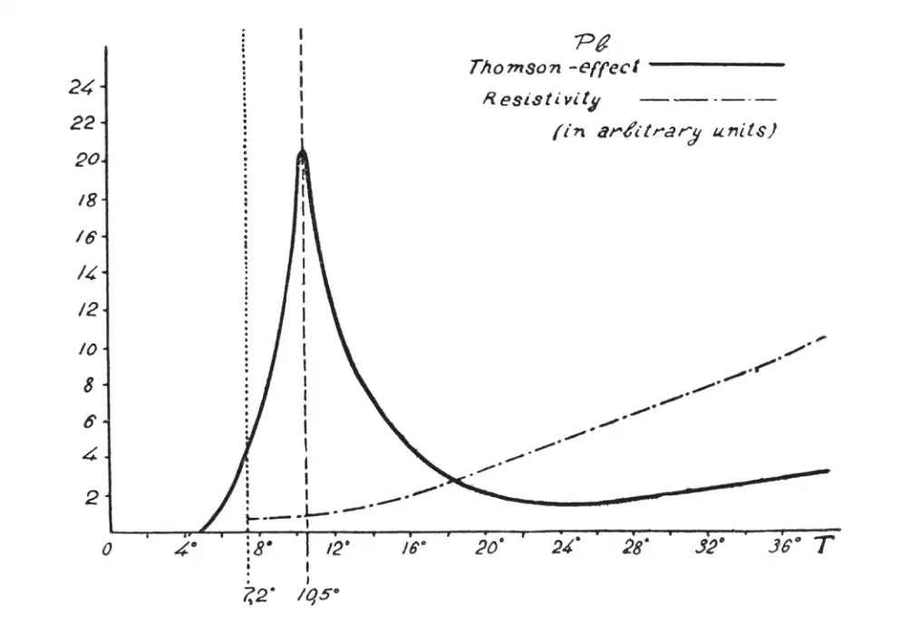
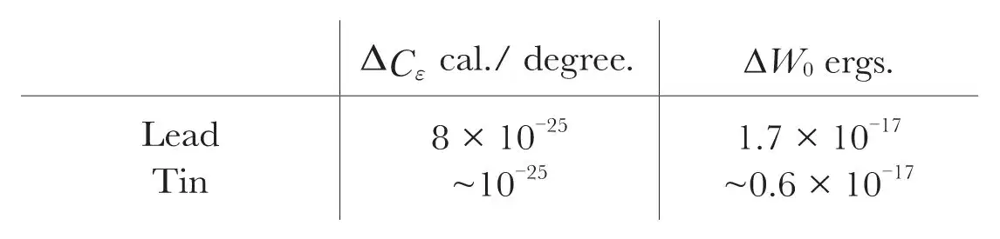
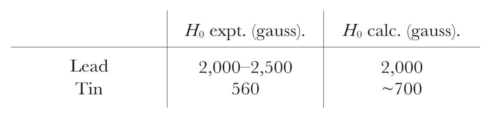

中文
中文J. Dorfman
Editor’s Note
Superconductivity—the conduction of electrical current in cold metals without resistance—was observed in 1911, but lacked an explanation. Many suspected that some kind of coherent behaviour among the electrons must be responsible. Here Russian physicist J. Dorfman explores experimental evidence for analogies between superconductivity and magnetism. He studies the temperature dependence of the thermoelectric effect for lead (where heat creates electricity), and finds a sharp cusp near the superconducting transition temperature, leading him to suspect an analogy between the ferromagnetic and superconducting transitions. Both are now seen to belong to the same class of “critical” transitions, although magnetism per se is not involved in this kind of superconductivity. 中文
IT was often assumed that the transition from normal conductivity to superconductivity may be connected with a kind of “spontaneous coupling” of the conduction electrons. Some authors were even inclined to identify this phenomenon with ferromagnetism. Although this extreme point of view seems to be very improbable, some analogies with ferromagnetism must surely appear if any kind of “spontaneous coupling” between electrons is responsible for superconductivity. For example, in this case the shape of the specific heat curve near the transition temperature must be analogous to that of ferromagnetic substances in the vicinity of the Curie point. W. Keesom and J. H. van den Ende,1 and F. Simon and K. Mendelssohn2 attempted to discover this anomaly of the specific heat in lead near the transition temperature (7.2° K), but they could not detect any trace of the effect. This result may be interpreted in two ways: either the hypothesis of the “spontaneous coupling” of the conduction electrons in superconductors is completely wrong, or the number of the electrons which are concerned in conductivity is here so small in comparison with the number of atoms that the specific heat anomaly of the conduction electrons cannot be detected with calorimetric methods. 中文
As our measurements have shown, the specific heat anomaly of ferromagnetic bodies at the Curie point is so well pronounced in the thermoelectric effects (Thomson effect), that in spite of some difficulties concerning the sign of this effect, the order of magnitude of the specific heat anomaly can be computed from the purely thermoelectric constants in good agreement with calorimetric measurements. It is natural to try the same method in the domain of superconductivity. The recent investigations by J. Borelius, W. M. Keesom, C. H. Johansson, and J. O. Linde3 of the thermoelectric force for lead and tin at the lowest temperatures permit us to compute the Thomson effect for these metals and to draw conclusions concerning the specific heat anomaly. Fig. 1 represents the Thomson coefficient for lead (as calculated from the experimental data) as a function of temperature. This curve is quite analogous to that of ferromagnetic substances, and it seems quite probable that it represents the general feature of the specific heat of the electrons concerned in the conductivity effects. It is not clear, however, why the temperature of the maximum of this specific heat curve (10.5° K) does not coincide with the transition point (7.2° K). Perhaps theory will be able to explain this discrepancy in the future. 中文

Fig. 1. 中文
From these results two important quantities may be calculated: first, ΔCε (the height of the maximum of the specific heat curve), and secondly, ΔW0 (the energy difference between the normal and the superconducting state at absolute zero), both for one electron. 中文

If the number of the electrons was equal to the number of atoms of lead, the specific heat anomaly could certainly be detected, its numerical value being of the same order of magnitude as the normal specific heat itself. The precision of the calorimetric measurements permits us to determine the upper limit of the number of the electrons involved in the conductivity effects of lead. Actually it seems that the number of the conduction electrons is less than 1/200 of the number of the atoms in this case. 中文
It is well known that magnetic fields destroy the superconductivity, the threshold value of the field H increasing as the temperature is lowered. By extrapolating the experimental data the value of H0 may be found corresponding to absolute zero. We assume that the threshold value of the field is given by the condition that the magnetic energy of the electron |μH0| (where μ is the spin moment) is equal to ΔW0. 中文
|μH0|=ΔW0 (1) 中文
This assumption means that the superconductivity must be destroyed when the energy of the external forces exceeds the energy of the “spontaneous coupling”. Form (1) we may calculate H0 for lead and tin, and compare them with the experimental results. 中文

According to the recent experiments of McLennan and his co-workers,4 superconductors cease to be superconducting for high frequency currents if the frequency v exceeds a certain threshold value. For tin at absolute zero, v~109 may be found by extrapolation of the experimental data obtained at higher temperatures. It is interesting to notice that by assuming
hv0=ΔW0=|μH0| (2)
(where h is Planck’s constant), we obtain for the same metal v0 = 1×109. 中文
The remarkable coincidence between the observed and the computed data seem to support the general trend of the assumptions developed in this note. It is interesting to notice that the frequency of the Larmor precession corresponding to H0 is equal to v0; thus the correlation between the two factors destroying the superconductivity may be found either on the lines of energetics or on the lines of the short time periods. Which of these interpretations corresponds to the real mechanism remains unsolved at this moment. 中文
(130, 166-167; 1932)
J. Dorfman: Physical-Technical Institute, Sosnovka 2, Leningrad (21), U.S.S.R., May 23.
References:
1. Comm. Leiden, 230 d (1930).
2. Z. Phys. Chem., B 16, H. 1 (1932).
3. Proc. Amsterdam Acad., 34, No. 10 (1931).
4. Proc. Roy. Soc., A, 136, No. 829, 52 (1932).